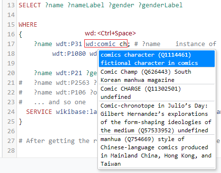
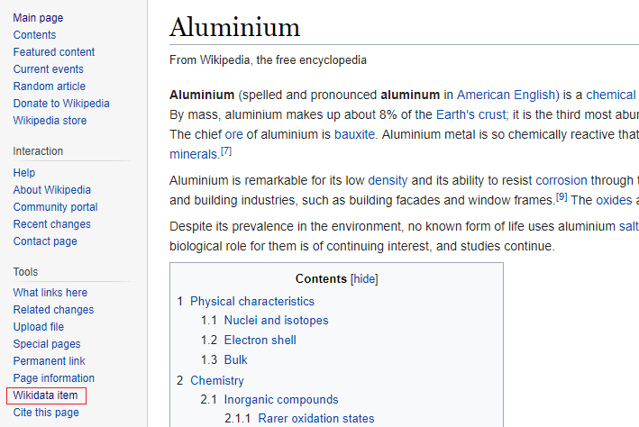

I know, the image above is mostly about DC, but this post is not only about Marvel and Lena Rose did a great job taking this picture.
In this post I explain how to create a Marvel Database (or a DC Database). For that, we will query data from Wikipedia and integrate it using Javascript and SQL. We will make a flexible tool that will allow you to create different tables to use in your projects. The concepts explained here can be extended for other subjects. This is a post for who doesn’t have time to learn the complex syntax of the modified sql used in the Wikidata system and still would like to play with their data.
The pipeline
The idea here is to go through the following steps to get a flexible database:
- Query tables from Wikidata and export as json files
- Create a Alasql database and insert the data from the json files
- Use the created database performing SQL queries
1. Extracting data from Wikipedia
Wikipedia has a great database and ontology behind it. You can access the query system by clicking here: https://w.wiki/4iP
In the above link you will find something similar to this (and you will find more information about it there):
SELECT ?name ?gender ?genderLabel
WHERE{
?name wdt:P31 wd:Q1114461;
wdt:P1080 wd:Q931597.
?name wdt:P21 ?gender.
SERVICE wikibase:label { bd:serviceParam wikibase:language "[AUTO_LANGUAGE]". }
}In this code I am selecting entities that are instances of comic character and are in the fictional universe Marvel Universe. It may seem strange at first, but each of those codes are part of the Wikipedia Ontology. It is how they deal with redundancy and can organize and make everything work! But how can you create your own queries?
First, wdt:<Ctrl+Space>. You notice that a helper tooltip pops up for you. Try typing instance of. You see that the code for instance of is wdt:P31. Using the same approach, now for a value, you will type wdt:<Ctrl+Space> (no t this time!) and comic character, enter, and voilà, you got the code wd:Q1114461.

Okay, Henry, but I have no idea about what we can use, I don’t have time to learn the Wikipedia language… and I understand you! So, to overcome this we will open this page here Juggernaut . This is the Wikipedia item code Q841372, the Juggernaut! Now look and check what are the information available for a comic character. Put your mouse pointer over the items in the Statements Section. For example, if you put your mouse over “instance of” you will get the P31 code! Since it is not a value, use wdt for this one. By browsing that page you get a good idea about what are the properties you can use.
Pause: If you want to create a database but don’t know yet about what it will be, try the Random article function to get insights.
We can do the same thing for ANY Wikipedia page. Go to the official Wikipedia website and search for anything, let’s say… Aluminium. Now check the left-side bar and look for Wikidata item link.

Click, and voilà, it shows all the attributes for this item. We see we get the mass by using wdt:P2067, and many other attributes that may apply for other types of metal.

Now that we have the Wikidata, we will:
- Create a query for an attribute of interest
- Download the result as .json
- Always track the IDs (Wikidata item URL) and Labels
For instance, I created one query for gender. One query for occupation, and so on. The result is a folder with many .json files I will load in my database formed by many tables. You could perform a single query with all the information. In my case, I want it to be malleable, so I can perform JOIN, LEFT JOING, and other SELECT commands to get different tables.
In fact, instead of getting only Marvel Universe, I discarded that filter and got a full database of instances of Comics Characters. So in my json files, you find Marvel, DC, and others. The resulting jsons are found in my Github page. Next, I will show how I used the json files with an easy SQL DB in Javascript.
For more complex queries or handling lists, please refer to the Wikidata website. Another good option is the Help button at the top of the Wikidata Query Service where you can find examples and support.
2. Creating an SQL Database in Javascript
Now that we have the json files, let’s insert them into our SQL Database. For this, we will use a tool named Alasql. With Alasql, you can load data and create tables in different manners (read more here).
Here, since we have the jsons from Wikidata, we will apply a SELECT on each json (file) and insert into a new table in our database for easy access. For simplification, my code will contain only two tables; you can find the complete version in the Github page.
// Partial code - check my github to get the complete one
import alasql from 'alasql'
const character = require('../dataset/character.json');
const abilities = require('../dataset/abilities.json');
const fictionalUniverse = require('../dataset/fictionalUniverse.json');
function MarvelDB(){
// Our jsons and table names
let tables = [
{name: 'abilities', data: abilities},
{name: 'character', data: character}
]
// Create database
let db = new alasql.Database()
// Only characters registered in the Marvel Universe
db.exec('CREATE TABLE fictionalUniverse')
db.exec('INSERT INTO fictionalUniverse\
SELECT char FROM ? \
WHERE fictionalUniverseLabel LIKE "Marvel Universe"', [fictionalUniverse])
// For each Json in 'tables', create table
tables.forEach(table => {
// Creates temporary table (Should not be necessary,
// but because of bugs caused by nesting INSERT INTO with SELECT WHERE IN,)
// I kept it like this:
db.exec(`CREATE TABLE aux_${table.name}`);
db.exec(`INSERT INTO aux_${table.name} SELECT * FROM ?`, [table.data]);
let filtered_data = db.exec(`SELECT * FROM aux_${table.name}\
WHERE aux_${table.name}.char IN\
(SELECT char FROM fictionalUniverse)`);
// Then when can create our table
db.exec(`CREATE TABLE ${table.name}`);
db.exec(`INSERT INTO ${table.name} SELECT * FROM ?`, [filtered_data]);
// and delete the temporary one
db.exec(`DROP TABLE aux_${table.name}`);
})
// Drop fictionalUniverse table -> character table contains the same elements
db.exec('DROP TABLE fictionalUniverse')
return db
}
And we are set. We have a database and can use it by calling let mydb = MarvelDB() and apply SQL commands like this: mydb.exec('SELECT DISTINCT abilityLabel from abilities').
3. Final code and usage
I defined some tests to make sure everything was working. It exemplifies the usage of our database. If you are not used to testing, just consider the let result = this.db.exec(...) and console.table(result) in the code below and ignore the other parts.
// Unit test
describe('Select Queries', function() {
beforeEach(() => this.db = marvelDB())
it('Name of the only agender with registered abilities', () => {
let result = this.db.exec(
'SELECT DISTINCT character.charLabel AS name\
FROM character JOIN gender ON character.char = gender.char\
JOIN abilities ON character.char = abilities.char\
WHERE gender.genderLabel LIKE "agender"');
//console.table(result);
expect(result[0].name).to.equal("Phoenix Force")
});
The above SELECT returns the column charLabel and renames to name. It also joins the tables character, gender and abilities, making sure the entries have the same character id (char). Finally, it filters by a specific gender named agender. For more examples on this database, please go to the Github page - don’t forget to star it :)
Henry Heberle, PhD.
Data Visualization Engineer / Data Scientist